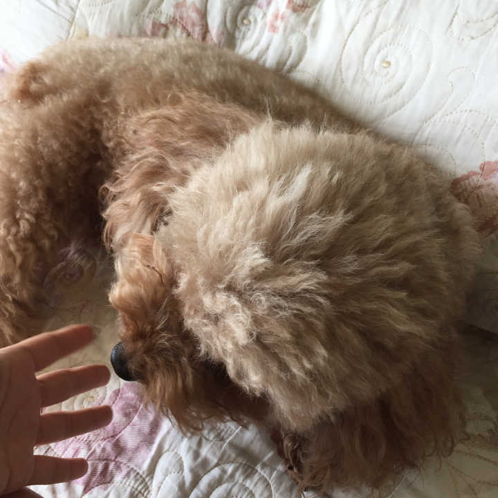
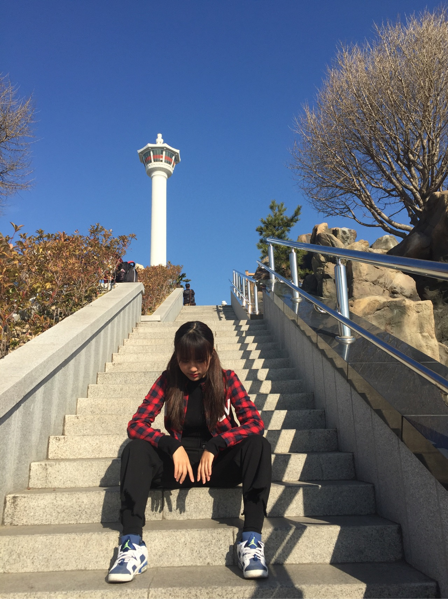
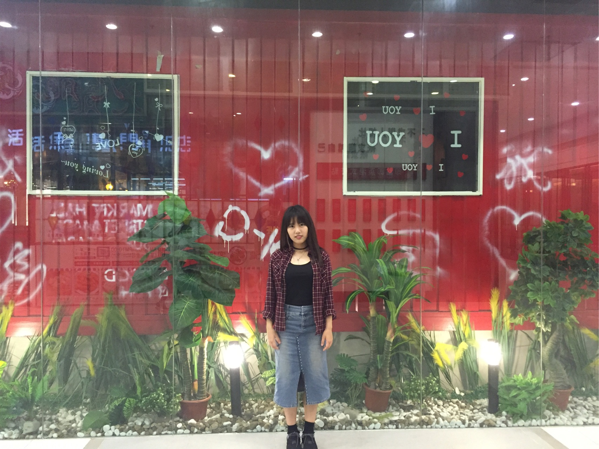
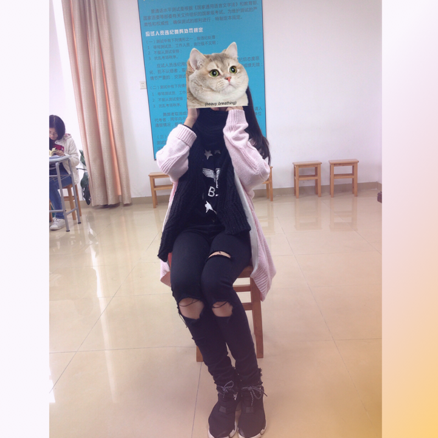
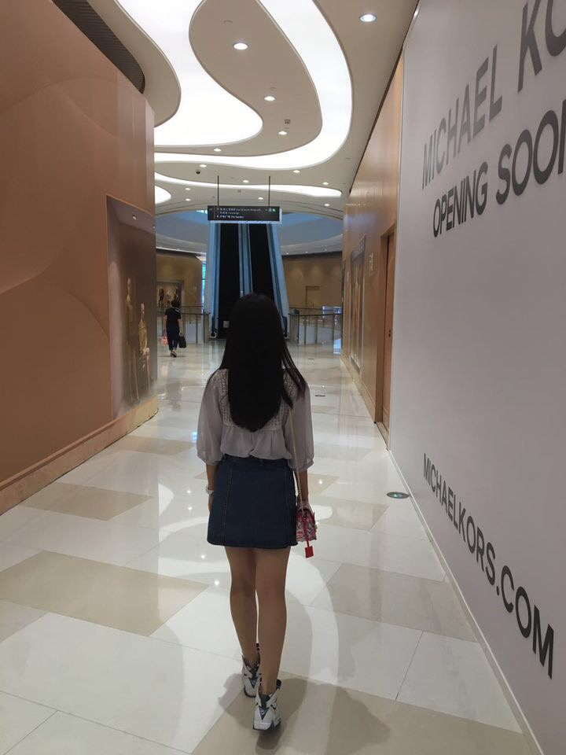

名字:
江yt
性别:男

介绍:
问题
答案
新建于:2017-07-26 10:56:49 PM，更新于2017-09-04 02:33:57 AM
正文: 看身材混搭 本人1米6体重微胖hhhhhhh
推荐下好搭配的球鞋系列 reebookpumpfury aj1345671113 Adidas smith还有好多喜欢的系列不打了 球鞋一般人一般腿的话选有设计感的净色基本不会出错



